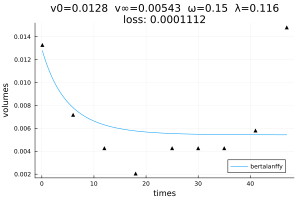
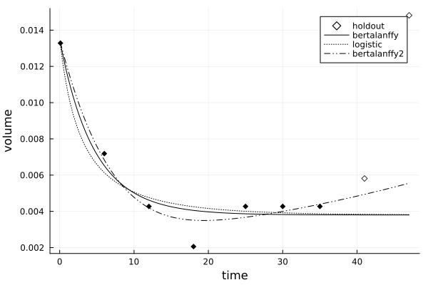

Quick start
First, let's grab some real clinical data collected in the study, Laleh et al. (2022) "Classical mathematical models for prediction of response to chemotherapy and immunotherapy", PLOS Computational Biology":
using TumorGrowth
records = patient_data();
record = records[16] # storing all measurements for one lesion
keys(record)(:Pt_hashID, :Study_Arm, :Study_id, :Arm_id, :T_weeks, :T_days, :Lesion_diam, :Lesion_vol, :Lesion_normvol, :response, :readings)Next, we calibrate the generalized Bertalanffy model using this particular patient record:
times = record.T_weeks
volumes = record.Lesion_normvol # volumes normalized by max over dataset
problem = CalibrationProblem(times, volumes, bertalanffy)
solve!(problem, 2000) # apply 2000 iterations of the calibration algorithm
p = solution(problem)
pretty(p)"v0=0.0128 v∞=0.00543 ω=0.15 λ=0.116"For advanced options, see CalibrationProblem.
We can visualize the outcome and make predictions for an extended time period:
using Plots
plot(problem)
extended_times = vcat(times, [46.0, 53.1])
bertalanffy(extended_times, p)11-element Vector{Float64}:
0.012786613474458523
0.00780654303325098
0.006303945918353933
0.0057717762221007815
0.005548517906845849
0.005486703272401006
0.005457786943779901
0.0054425193897102014
0.005436340985449626
0.005437024733865962
0.005433812667343673And compare several models on a holdout set:
comparison = compare(times, volumes, [bertalanffy, logistic, bertalanffy2], holdouts=2)ModelComparison with 2 holdouts:
metric: mae
bertalanffy: 0.006516
logistic: 0.006485
bertalanffy2: 0.005269plot(comparison)
See compare for more options.